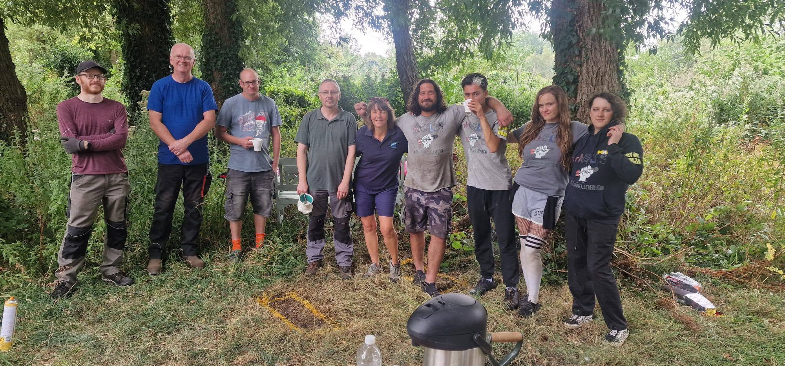
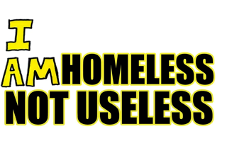
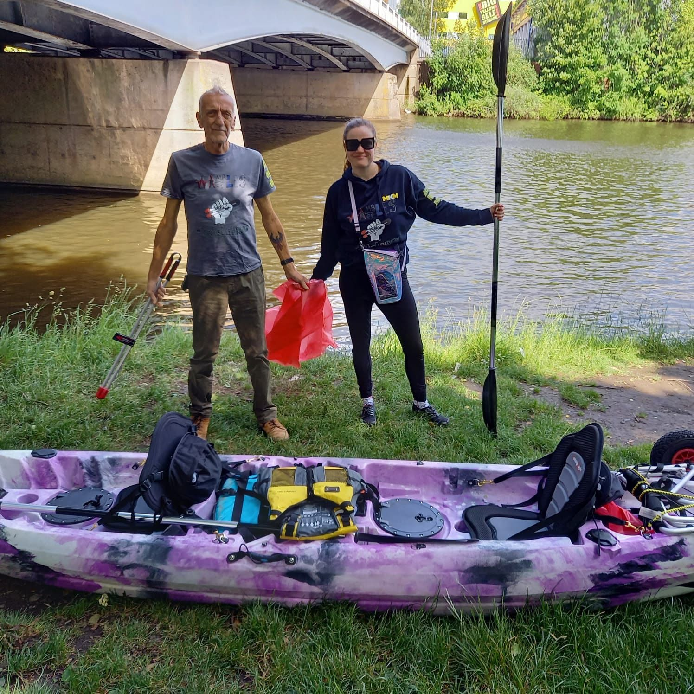
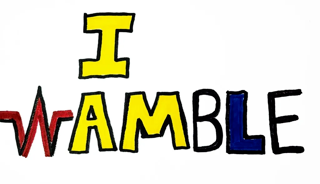

Community first
We create welcoming ways for people to connect, contribute and be seen for what they can do.
Cardiff community • Wales
Wambles of Wales is a people-powered movement built on dignity, friendship and action. We turn spare time into cleaner streets, shared meals and reasons to say yes to life.

What we do

We create welcoming ways for people to connect, contribute and be seen for what they can do.

From donations to clean-ups, our projects respond to real needs with the people around us.

Movement, nature and shared adventures help us build confidence, belonging and momentum.
The Wamble way
Every bag collected, kind word shared and challenge completed helps make Cardiff a little more connected. Our work is intentionally human: open, imperfect and always moving forward.
Read our story →
Get involved